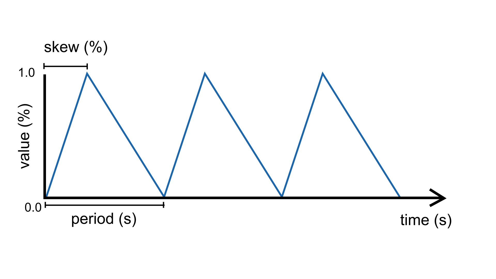
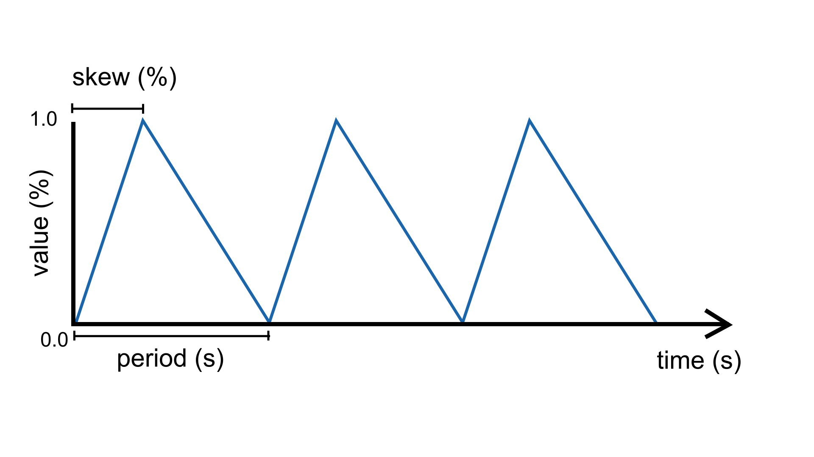

Wave
An analog source unit that generates a wave signal in range [0, 1].
Shape
There are three potential wave types that can be set using the shape parameter:
SQUARE (default), TRIANGLE or SINE.
 

{kind=link}

Parameters
Regardless of the shape, the signal can be tuned by adjusting the following parameters:
period(): Sets the duration of one cycle in seconds.
skew(): Controls the balance between the rising and falling portions of the wave cycle (in range [0, 1]). Each wave type behaves slightly differently with this parameter, which will be detailed below.
random(): Controls the degree of randomness of the wave (in range [0, 1]).
frequency(): Inverse of period; sets the cycles per second (Hz).
bpm(): Alternative way to set the frequency using beats per minute (BPM).
phase(): Sets the initial point in the wave cycle (as % of period) (in range [0, 1]).
amplitude(): Sets the peak level of the wave (as % of max) (in range [0, 1]).
Tip
In addition, it is possible to add randomness to a wave’s period using function randomize().
Square Wave
Generates a square wave signal when the shape parameter is
set to SQUARE. The square wave is the default for this parameter.
For the SQUARE wave, the skew represents the proportion of time (expressed as a percentage) in each
cycle (period) during which the wave is “on” – in other words, its duty cycle.
Example
Makes the built-in LED blink with a period of 4 seconds. Because the duty cycle is set to 25%, the LED will stay on for 1 second and then off for 3 seconds.
#include <Plaquette.h>
DigitalOut led(13);
Wave blinkOsc(SQUARE, 4.0);
void begin() {
blinkOsc.skew(0.25); // Sets the duty cycle to 25%
}
void step() {
blinkOsc >> led;
}
Triangle Wave
Generates a wave such as the
triangle wave and the
sawtooth wave when the shape parameter is set to TRIANGLE.
In this case, the skew parameter represents the “turning point” during the period at which
the signals reaches its maximum and starts going down again. Changing the skew
allows to generate different kinds of triangular-shaped waves. For example, by
setting skew to 1.0 (100%) one obtains a sawtooth wave; by setting it to 0.0 (0%)
an inverted sawtooth is created; anything in between generates different flavors
of triangle waves.
Example
Controls a set of traffic lights that go: red, yellow, green, red, yellow, green, and so on. It uses a sawtooth to iterate through these three states.
#include <Plaquette.h>
DigitalOut green(10);
DigitalOut yellow(11);
DigitalOut red(12);
Wave osc(TRIANGLE, 10.0);
void begin() {
osc.skew(1.0); // sawtooth wave
}
void step() {
// Shut down all lights.
0 >> led >> yellow >> green;
// Switch appropriate LED.
if (osc < 0.4)
green.on();
else if (osc < 0.6)
yellow.on();
else
red.on();
}
Sine Wave
Generates a sinusoid or sine wave when the shape parameter is set to SINE.
The signal is remapped to oscillate between 0 and 1 (rather than -1 and 1 as the traditional sine wave
function).
Here, the skew parameter controls when the sine wave reaches its peak within a cycle. A skew value of
0.5 (default) yields a standard symmetric sine wave. Lower values shift the peak earlier (left-skewed),
while higher values shift it later (right-skewed), allowing for asymmetric sine shapes while preserving smoothness.

Example
Pulses an LED.
#include <Plaquette.h>
AnalogOut led(9);
Wave osc(SINE);
void begin() {
osc.frequency(5.0); // frequency of 5 Hz
}
void step() {
osc >> led;
}
Randomization
In addition to controlling period, shape, skew, and amplitude, the Wave units can also generate
randomized oscillations in a similar manner as Metronome units using the randomize function.
This allows the oscillation to feel less mechanical and more organic, closer to natural rhythms like breathing,
heartbeat variations, or the flicker of firelight.
When randomness is active, the wave no longer produces perfectly periodic oscillations. Instead,
each cycle’s duration is perturbed according to the chosen randomness level. However, on the long run,
the average period of oscillation will match the wave’s period parameter.
Example
Pulse an LED. Uses a low-frequency oscillator (LFO) to slowly modify the wave’s randomness.
#include <Plaquette.h>
AnalogOut led(9);
Wave osc(SINE); // average period of 1 second (default)
Wave lfo(SINE, 20.0); // 20-seconds oscillator
void begin() {}
void step() {
osc.randomize(lfo);
osc >> led;
}
-
class Wave : public AbstractWave
Sine oscillator. Phase is expressed as % of period.
Public Functions
-
Wave(float period, Engine &engine = Engine::primary())
Constructor (creates default square wave).
- Parameters
period – the period of oscillation (in seconds)
engine – the engine running this unit
-
explicit Wave(WaveShape shape, Engine &engine = Engine::primary())
Constructor.
Defaults to period of 1 second.
- Parameters
shape – the wave shape
engine – the engine running this unit
-
Wave(float period, float skew, Engine &engine = Engine::primary())
Constructor (creates default square wave).
- Parameters
period – the period of oscillation (in seconds)
skew – the duty-cycle as a value in [0, 1]
engine – the engine running this unit
-
Wave(WaveShape shape, float period, Engine &engine = Engine::primary())
Constructor.
- Parameters
shape – the wave shape
period – the period of oscillation (in seconds)
engine – the engine running this unit
-
Wave(WaveShape shape, float period, float skew, Engine &engine = Engine::primary())
Constructor.
- Parameters
shape – the wave shape
period – the period of oscillation (in seconds)
skew – the duty-cycle as a value in [0, 1]
engine – the engine running this unit
-
void shape(WaveShape shape)
Sets wave shape.
- Parameters
shape – the wave shape (SQUARE, TRIANGLE, SINE)
-
inline WaveShape shape() const
Returns current wave shape.
-
virtual float get()
Returns value in [0, 1].
-
virtual float shiftBy(float phaseShift)
Returns oscillator’s value with given phase shift (in % of period).
Supports values outside [0,1], which will be wrapped accordingly. Eg. shiftBy(0.2) returns future value of oscillator after 20% of its period would have passed.
- Parameters
phaseShift – the phase shift (in % of period)
- Returns
the value of oscillator with given phase shift
-
virtual float shiftByTime(float timeShift)
Returns oscillator’s value with given phase shift expressed in time (in seconds).
- Parameters
timeShift – the shift in time (seconds)
- Returns
the value of oscillator with time shift
-
virtual float atPhase(float phase)
Returns the oscillator’s value at a given absolute phase (in % of period).
Supports values outside [0,1], which will be wrapped accordingly. Eg: atPhase(0.25) returns the oscillator value at 25% of its period.
- Parameters
phase – the absolute phase at which to evaluate the oscillator (in % of period)
- Returns
the value of the oscillator at the given phase
-
virtual void amplitude(float amplitude)
Sets the amplitude of the wave.
- Parameters
amplitude – a value in [0, 1] that determines the amplitude of the wave (centered at 0.5).
-
inline virtual float amplitude() const
Returns the amplitude of the wave.
-
virtual void skew(float skew)
Sets the skew of the signal as a % of period.
- Parameters
skew – the skew as a value in [0, 1]
-
inline virtual float skew() const
Returns the skew of the signal.
-
inline virtual void width(float width)
- Deprecated:
Sets the width of the signal as a % of period.
- Parameters
width – the skew as a value in [0, 1]
-
inline virtual float width() const
- Deprecated:
Returns the skew of the signal.
-
virtual void onBang(EventCallback callback)
Registers event callback on wave end-of-period (“bang”) event.
-
inline virtual float mapTo(float toLow, float toHigh)
Maps value to new range.
-
inline float seconds() const
Returns engine time in seconds.
-
inline uint32_t milliSeconds() const
Returns engine time in milliseconds.
-
inline uint64_t microSeconds() const
Returns engine time in microseconds.
-
inline unsigned long nSteps() const
Returns number of engine steps.
-
inline float sampleRate() const
Returns engine sample rate.
-
inline float samplePeriod() const
Returns enginesample period.
-
inline operator float()
Object can be used directly to access its value.
-
inline virtual float put(float value)
Pushes value into the unit.
- Parameters
value – the value sent to the unit
- Returns
the new value of the unit
-
inline explicit operator bool()
Operator that allows usage in conditional expressions.
-
virtual void period(float period)
Sets the period (in seconds).
- Parameters
period – the period of oscillation (in seconds)
-
inline virtual float period() const
Returns the period (in seconds).
-
virtual void frequency(float frequency)
Sets the frequency (in Hz).
- Parameters
frequency – the frequency of oscillation (in Hz)
-
inline virtual float frequency() const
Returns the frequency (in Hz).
-
virtual void bpm(float bpm)
Sets the frequency in beats-per-minute.
- Parameters
bpm – the frequency of oscillation (in BPM)
-
inline virtual float bpm() const
Returns the frequency (in BPM).
-
virtual void phase(float phase)
Sets the phase at % of period.
- Parameters
phase – the phase (in % of period)
-
inline virtual float phase() const
Returns the phase (in % of period).
-
virtual void phaseShift(float phaseShift)
Sets the phase shift (ie.
the offset, in % of period).
Warning
This function is disabled if randomness() > 0.
- Parameters
phaseShift – the phase shift (in % of period)
-
virtual float phaseShift() const
Returns the phase shift (ie.
the offset, in % of period).
Warning
This function always returns 0 when randomness() > 0.
-
virtual float timeToPhase(float time) const
Utility function to convert time to phase.
- Parameters
time – relative time in seconds
- Returns
the equivalent phase
-
virtual void setTime(float time)
Forces current time (in seconds).
Warning
This function is disabled if randomness() > 0.
-
virtual void addTime(float time)
Adds time to current time (in seconds).
Warning
This function is disabled if randomness() > 0.
-
inline virtual bool isRunning() const
Returns true iff the wave is currently running.
-
inline virtual bool isForward() const
Returns true iff the wave is moving forward in time.
-
inline virtual void setForward(bool isForward)
Sets the direction of oscillation.
- Parameters
isForward – true iff the wave is moving forward in time
-
inline virtual void forward()
Sets the direction of oscillation to move forward in time.
-
inline virtual void reverse()
Sets the direction of oscillation to move backward in time.
-
inline virtual void toggleReverse()
Toggles the direction of oscillation.
-
virtual float randomness() const
Returns the randomness level in [0, 1].
-
virtual void randomize(float randomness = 1.0f)
Sets the randomness level in [0, 1] (0: no randomness, 1: full randomness).
-
inline virtual void noRandomize()
Disables randomness.
-
virtual void start()
Starts/restarts the chronometer.
-
virtual void stop()
Interrupts the chronometer and resets to zero.
-
virtual void pause()
Interrupts the chronometer.
-
virtual void resume()
Resumes process.
-
virtual void togglePause()
Toggles pause/unpause.
-
Wave(float period, Engine &engine = Engine::primary())